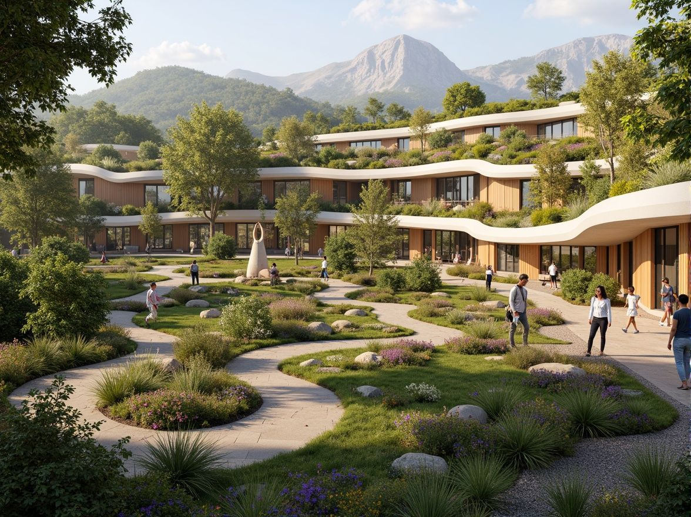
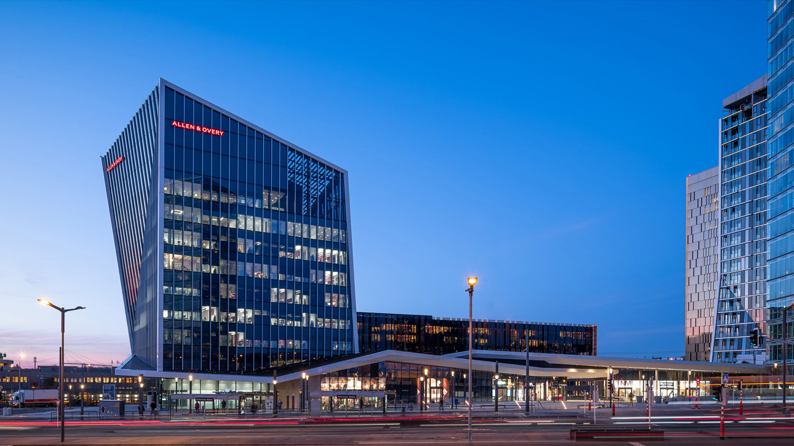
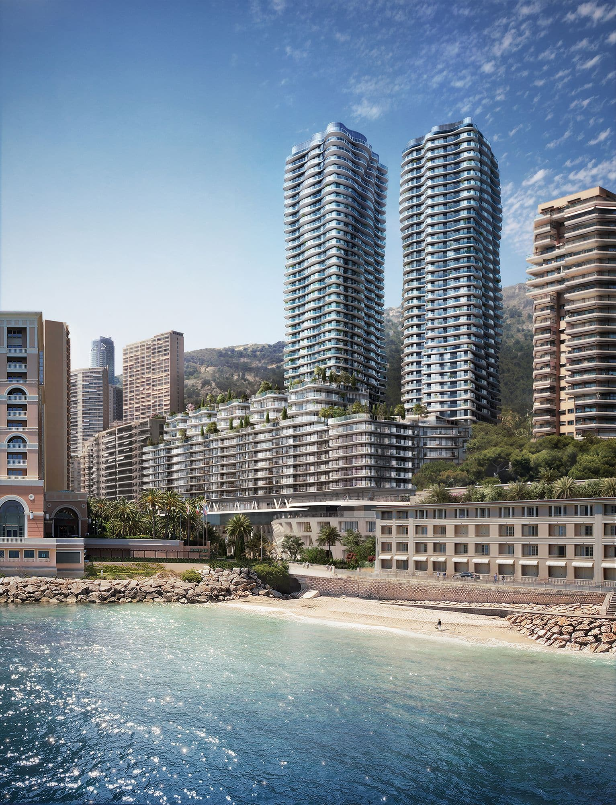

Préserver la biodiversité
- Conservation des arbres existants lorsque cela est possible.
- Utilisation d'essences végétales locales adaptées au climat.
- Création d'habitats favorables à la faune et à la flore.
Intégrer le vivant dans l'architecture en créant des espaces où nature et bâtiment fonctionnent ensemble au service de la biodiversité, du bien-être et de la résilience environnementale.
Explorer l'expertiseL'intégration paysagère consiste à concevoir des projets où les espaces extérieurs participent pleinement à la qualité architecturale. En favorisant la biodiversité, la gestion durable des ressources et le confort des usagers, le paysage devient un élément essentiel de la conception.

Chez Arquitectonica, le paysage est considéré comme un véritable écosystème intégré au projet architectural. Les espaces végétalisés contribuent à la régulation climatique, à la gestion des eaux pluviales, à l'amélioration de la biodiversité et au bien-être des utilisateurs, tout en renforçant l'identité du projet.
Les projets privilégient la conservation des éléments naturels existants afin de préserver la biodiversité locale et de limiter l'impact des aménagements.
La sélection d'espèces locales adaptées au climat permet de réduire les besoins en entretien tout en favorisant la résilience écologique des espaces paysagers.
L'utilisation d'espèces peu gourmandes en eau, de systèmes d'irrigation intelligents et de solutions de récupération des eaux pluviales améliore la performance environnementale des projets.
Le contact avec la nature est intégré dès la conception afin d'améliorer le confort physique, le bien-être psychologique et la qualité des espaces de vie.
Les dispositifs d'éclairage sont étudiés pour limiter les nuisances nocturnes et préserver les écosystèmes tout en assurant la sécurité des usagers.
Le paysage est conçu comme une composante architecturale à part entière, renforçant les liens entre le bâtiment, les espaces publics et son environnement.

Projet urbain mixte créant une nouvelle centralité grâce à ses commerces, espaces publics et connexions piétonnes.
Voir le projet →
Réaménagement intégrant la végétalisation des espaces extérieurs afin d'améliorer le confort des utilisateurs et l'intégration du bâtiment dans son environnement.
Voir le projet →
Tour résidentielle intégrant logements, crèche et parking dans un contexte urbain dense.
Voir le projet →